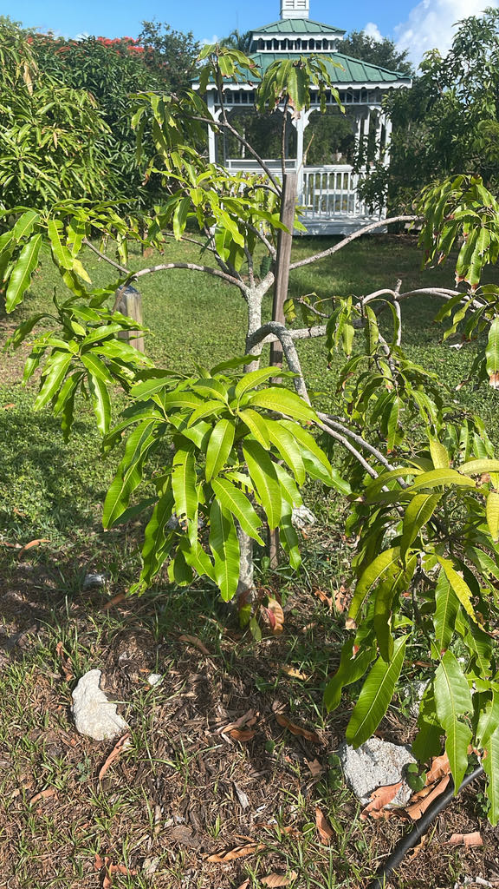

- Prunus domestica is a hexaploid — it carries six copies of its genome instead of the usual two. Genetic analysis points to it arising from a natural hybrid cross between cherry plum (Prunus cerasifera) and blackthorn (Prunus spinosa), two wild Eurasian relatives that essentially fused into something new. No true wild-type P.
- No wild population of Prunus domestica has ever been found, which suggests it was shaped by human selection from the very beginning.
- Every plum you have ever eaten as a 'prune' is the same fruit — just dried. European plum flesh is high enough in sugar that it can be dried whole without fermenting, which is why P. domestica became the dominant prune crop worldwide while other plum species cannot make the same claim.
- The Roman author Pliny, writing around the first century CE, described a wide range of 'Damascus plum' cultivars — their uses, colors, and grafting techniques — and some Roman varieties appear to have been essentially identical to cultivars still grown today.
Prunus domestica originated in the region around the Caucasus Mountains and the Caspian Sea, most likely as a naturally occurring hybrid between cherry plum (Prunus cerasifera) and blackthorn (Prunus spinosa). It has been in cultivation for more than 2,000 years and spread across Europe and western Asia in antiquity.
No true wild population has ever been confirmed, pointing to a history intertwined with human agriculture from its earliest days.
It reached North America with early European colonists and was well established in the American nursery trade by the 18th century. In Florida, however, P. domestica is rarely grown with success: its chilling-hour requirement of 700 to 1,100 hours far exceeds what the state's mild winters reliably deliver.
UF/IFAS plum research for Florida has focused instead on low-chill Japanese-type plums and the university's own 'Gulf'-series cultivars, which are specifically bred for the Gulf Coast climate. The specimen here is best understood as a botanical representative of one of the world's oldest cultivated fruits.
- That dusty, powdery film on a ripe plum is not residue — it is epicuticular wax secreted by the fruit itself. This natural coating is hydrophobic, slowing moisture loss through the skin and acting as a physical barrier against fungal spores and other pathogens. Rub it off and the fruit loses both its characteristic matte sheen and a meaningful layer of protection.
- The chilling-hour arithmetic is stark for visitors in the Bradenton area. Prunus domestica needs 700 to 1,100 hours of temperatures between 32 and 45 degrees Fahrenheit each winter to break dormancy and set fruit reliably — yet southwest Florida typically accumulates only around 200 to 300 such hours in an average year.
- The gap between what this tree expects and what our climate delivers is the reason it is a botanical curiosity here rather than a backyard staple.
The spring flowers open before most leaves fully emerge, making them an early and accessible nectar source for honeybees, native bees, and other pollinators at a time when forage can be sparse. The Eastern Tiger Swallowtail (Papilio glaucus) is documented as a larval host on Prunus domestica, and the genus as a whole is among the more productive butterfly and moth hosts in temperate North America.
Ripe fruit that falls or is left on the tree is taken by birds and small mammals. As a non-native tree, P. domestica does not have the deep co-evolutionary relationships with Florida's fauna that native Prunus species — flatwoods plum (P. umbellata) and Chickasaw plum (P. angustifolia) — provide, but it contributes meaningfully during bloom and fruiting seasons.
White, five-petaled, and typically fragrant, appearing in early to mid-spring before or alongside the emerging leaves. Flowers appear singly or in small clusters of two or three at the tips of short spurs. Many cultivars are self-fertile, though cross-pollination generally improves fruit set.
A drupe (stone fruit) roughly 1 to 2 inches in diameter, ripening in summer to early fall depending on cultivar. Skin color ranges widely across varieties — purple, red, yellow, or green — usually with a powdery waxy bloom. Flesh is sweet and surrounds a single flattened pit.
Deciduous, elliptic to obovate, with finely serrated margins, medium green above and slightly paler and often softly hairy beneath. Arranged alternately on the stems.
Commercially propagated by grafting or budding onto a compatible rootstock, which controls vigor and influences fruit quality. Trees can also be grown from seed, but seedlings do not reliably reproduce the parent's fruit characteristics. Some cultivars sucker from the roots.
Late winter to early spring is the showiest moment: snowy white, five-petaled blossoms erupt on completely bare, twiggy branches before any leaves emerge. By summer, scan the short woody fruiting spurs for heavy hanging drupes — round to oval, with that signature powdery, dusty sheen across the skin.
Year-round, notice the alternate, finely toothed leaves and the relatively twiggy crown; check the ends of short lateral branches for sharp, rigid, spine-like spur tips that can give an unwary hand a poke.
Keep dogs away from fallen fruit and any part of this tree other than the flesh. The pits, stems, leaves, and roots of Prunus domestica contain cyanogenic glycosides — compounds that release hydrogen cyanide when chewed or digested. The ASPCA lists plum as toxic to dogs, cats, and horses, and even a single chewed pit can release enough cyanide to cause serious poisoning in a dog.
For people, the ripe flesh is a safe, widely enjoyed food; simply discard the pit and do not chew or crush the seeds. Swallowing one or two whole pits is unlikely to cause harm in adults, but chewing them or consuming several raises genuine risk — Poison Control's guidance is straightforward: eat the fruit, discard the seed.
Observe and enjoy — but keep a close watch if you have a dog with you. All parts of this tree except the ripe flesh contain cyanogenic compounds; fallen fruit and dropped branches beneath the canopy are the most likely hazard. Keep dogs on a short leash and prevent them from sniffing around or chewing anything that has fallen under the tree.
The 'Gulf' series of plum cultivars developed by UF/IFAS — including Gulf Beauty, Gulf Blaze, and Gulf Rose — are Japanese-type plums (Prunus salicina) bred specifically for Florida's low-chill winters, not cultivars of P. domestica.
Visitors interested in growing plums at home in the Bradenton area would have far better success with those low-chill selections than with standard European plum varieties.
Greengage and damson plums, both familiar from European culinary traditions, are subspecies of Prunus domestica — botanically the same species as the plum on this sign, just selected for different fruit characteristics over centuries of cultivation.

- © Zailibeth Perez (CC-BY-NC), via iNaturalist